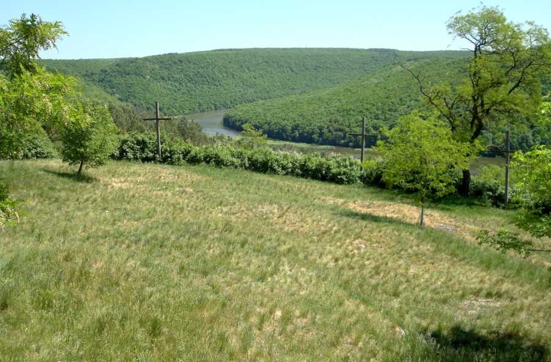
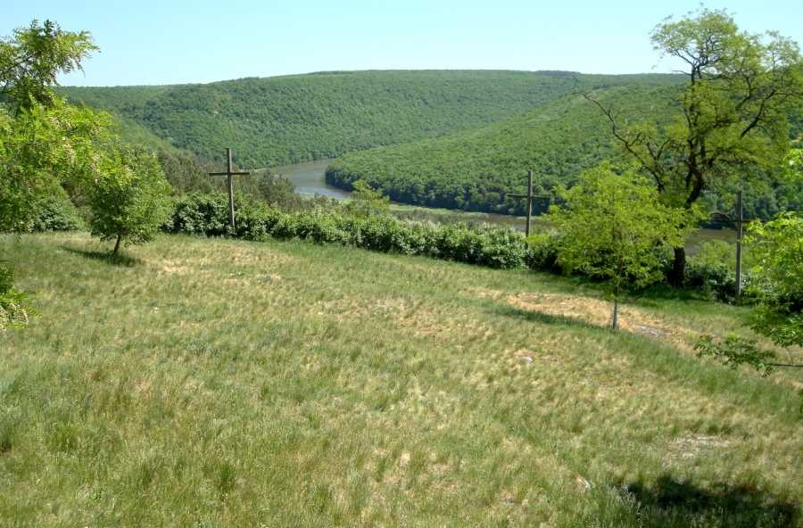

Як відомо, шлюби більшості руських князів були не наслідком палкого кохання, а найпоширенішим способом налагодити стосунки з сусідами та укріпити власні володіння. Шлюб наймудрішого галицького князя Ярослава Осмомисла не став винятком. Він одружився з Ольгою, дочкою засновника Москви Юрія Долгорукого, не тому, що був закоханий у неї, а задля зміцнення Галицького князівства.
Минали роки, володіння розширювалися, а серце князя потребувало кохання. Його Ярославові Осмомислу подарувала випадкова зустріч із донькою половецького боярина Настасією Чагрівною. Відтоді князь, тільки-но з’являлася нагода, сідлав коня і вирушав далеко за межі Галича до коханої. Тут, у зеленому урочищі серед густого лісу, минали їхні найщасливіші хвилини.
Але невдовзі таємниця закоханих була викрита. Після того, як Настасія народила князеві сина Олега, про них говорили в усіх князівських палацах Київської Русі. Ярослав Осмомисл зібрався розлучитися з Ольгою, яку так і не зміг покохати, одружитися з Настасією, а синові передати князівську корону.
Але галицькі бояри, незадоволені таким ходом подій, підняли бунт, який очолила розлючена Ольга. Поки князя тримали в ув’язненні, Настасію спалили на вогнищі як чарівницю, що заворожила володаря Галицького князівства. А закохані пари приїжджають до урочища «Монастирок», бо вірять, що це місце подарує їм таку ж міцність почуттів, як і в Ярослава Осмомисла та Настасії.
Але урочище «Монастирок» буде цікаве не тільки закоханим. Тут є своєрідна хресна дорога, яка відтворює шлях Ісуса Христа на Голгофу. Між сходами, що ведуть на крутий пагорб, – стації, які ілюструють епізоди останньої дороги Ісуса. Подолавши цей стрімкий підйом, ти побачиш символічну могилу Христа.
Вона розміщена всередині 5-метрової скелі, яка візуально нагадує… голову чорта. Так, місцеві називають цю скелю Чортовим каменем і розповідають, що колись чорт збирався кинути її на церкву, що стояла поблизу, але не наважився, тому залишив на пагорбі.
І правильно зробив: вибравшись на скелю, ти побачиш фантастичний краєвид лісу і, розглядаючи його, ще довго не захочеш спускатися вниз. Але спуститися усе-таки варто. Тут, поруч із хресною дорогою, є джерело з дуже смачною водою. Вона додає енергії і знімає стрес. А також, за розповідями місцевих, ця вода цілюща: допомагає лікувати хвороби очей.
Біля джерела стоїть церква, побудована на місці монастиря, який існував тут ще з ХІV ст. Його кілька разів руйнували татарські війська, а згодом спалили за наказом радянської влади. Біля церкви, джерела і на всій території урочища «Монастирок» – зручні лавочки, тому тут можна буде відпочити, насолоджуючись навколишньою природою.
Дістатися до «Монастирка» можна з міста Бережани, відстань до якого – 4 км. Найзручніше їхати автомобілем автошляхом М-12 у напрямку Рогатина. Дорога займе 7-10 хвилин. У селі Лісники побачите вказівник, біля якого слід повернути ліворуч і проїхати кілька хвилин. Якщо ти любиш піші прогулянки, то зможеш дійти до урочища за 40-45 хвилин.
Перед відвіданням «Монастирка» варто подбати про зручне взуття, щоб не виникало зайвих труднощів під час підйому до Чортового каменя. І захопи порожню пляшку – попивши води з джерела, ти точно захочеш набрати хоч трохи у зворотну дорогу. Також у «Монастирку» можна влаштувати чудовий пікнік: тут є чарівний чистий ставок, біля якого можна розміститися з чим-небудь смачненьким. Але продуктами краще запастися в Бережанах: крамниці на шляху через село Лісники вам не трапляться. Джерело, церква, височенні дерева, мальовничі стежки – в урочищі «Монастирок» усе дихає спокоєм та гармонією і не залишає шансів на поганий настрій, сумні думки, незадоволення. Боротися з впливом цього місця даремно: звідси ти повернешся щасливішим, ніж раніше.
 
